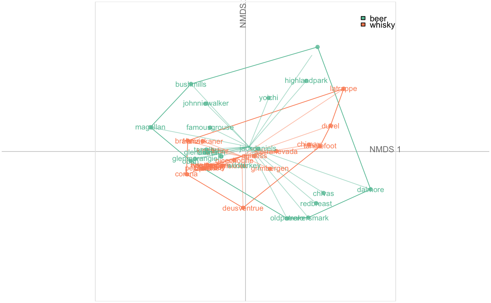

plot_NMDS( x, f = NULL, axes = c(1, 2), points = TRUE, points_transp = 1/4, chull = TRUE, chullfilled = FALSE, labelgroups = FALSE, legend = TRUE, title = "", box = TRUE, axesnames = TRUE, palette = pal_qual ) plot_MDS( x, f = NULL, axes = c(1, 2), points = TRUE, points_transp = 1/4, chull = TRUE, chullfilled = FALSE, labelgroups = FALSE, legend = TRUE, title = "", box = TRUE, axesnames = TRUE, palette = pal_qual )
Arguments
| x | |
|---|---|
| f | factor specification to feed fac_dispatcher |
| axes |
|
| points |
|
| points_transp |
|
| chull |
|
| chullfilled |
|
| labelgroups |
|
| legend |
|
| title |
|
| box |
|
| axesnames |
|
| palette |
|
See also
Other grindr:
drawers,
layers_morphospace,
layers,
mosaic_engine(),
papers,
pile(),
plot_LDA(),
plot_PCA()
Examples
### First prepare an NMDS object x <- bot %>% efourier %>% NMDS#>#>#>#> Warning: results may be meaningless because data have negative entries in method “bray”#> Run 0 stress 0.07227125 #> Run 1 stress 0.07227126 #> ... Procrustes: rmse 2.381226e-05 max resid 9.813984e-05 #> ... Similar to previous best #> Run 2 stress 0.07227125 #> ... Procrustes: rmse 5.398747e-06 max resid 1.801246e-05 #> ... Similar to previous best #> Run 3 stress 0.07227125 #> ... Procrustes: rmse 1.016816e-05 max resid 3.960546e-05 #> ... Similar to previous best #> Run 4 stress 0.07227125 #> ... Procrustes: rmse 7.108404e-06 max resid 3.438065e-05 #> ... Similar to previous best #> Run 5 stress 0.07227133 #> ... Procrustes: rmse 6.025535e-05 max resid 0.0002354647 #> ... Similar to previous best #> Run 6 stress 0.07227126 #> ... Procrustes: rmse 2.31341e-05 max resid 9.482347e-05 #> ... Similar to previous best #> Run 7 stress 0.1659492 #> Run 8 stress 0.07227125 #> ... Procrustes: rmse 6.728685e-06 max resid 2.889537e-05 #> ... Similar to previous best #> Run 9 stress 0.1717543 #> Run 10 stress 0.07227135 #> ... Procrustes: rmse 2.711831e-05 max resid 0.000104351 #> ... Similar to previous best #> Run 11 stress 0.07227128 #> ... Procrustes: rmse 1.915063e-05 max resid 6.038756e-05 #> ... Similar to previous best #> Run 12 stress 0.3988279 #> Run 13 stress 0.07227126 #> ... Procrustes: rmse 2.422202e-05 max resid 9.792758e-05 #> ... Similar to previous best #> Run 14 stress 0.07227125 #> ... Procrustes: rmse 5.461193e-06 max resid 1.91242e-05 #> ... Similar to previous best #> Run 15 stress 0.07227134 #> ... Procrustes: rmse 6.751208e-05 max resid 0.0002664567 #> ... Similar to previous best #> Run 16 stress 0.07227125 #> ... Procrustes: rmse 4.220468e-06 max resid 2.161552e-05 #> ... Similar to previous best #> Run 17 stress 0.07227127 #> ... Procrustes: rmse 2.884357e-05 max resid 0.0001198705 #> ... Similar to previous best #> Run 18 stress 0.07227125 #> ... Procrustes: rmse 8.609579e-06 max resid 3.162325e-05 #> ... Similar to previous best #> Run 19 stress 0.07227125 #> ... Procrustes: rmse 7.593247e-06 max resid 2.720023e-05 #> ... Similar to previous best #> Run 20 stress 0.07227126 #> ... Procrustes: rmse 1.675066e-05 max resid 6.230567e-05 #> ... Similar to previous best #> *** Solution reachedplot_NMDS(x)### Same on MDS object x <- bot %>% efourier %>% MDS#>#>plot_MDS(x)